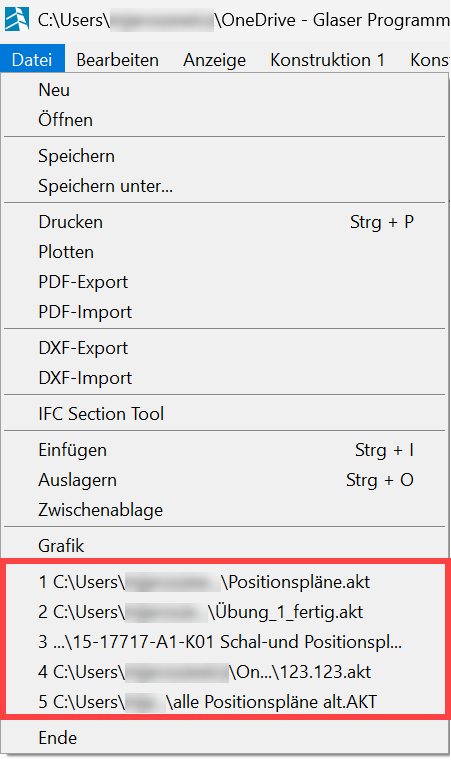
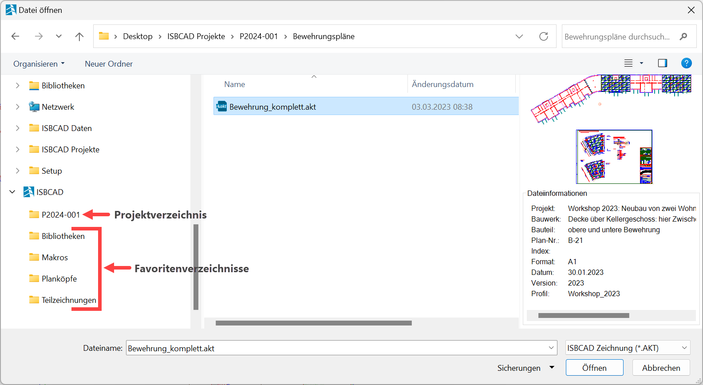
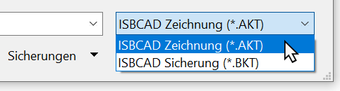
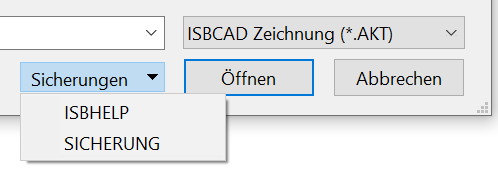

Mit dieser Funktion öffnen Sie eine vorhandene ISBCAD-Zeichnungsdatei (.AKT) oder eine Sicherungsdatei. Wenn bereits eine Zeichnung geöffnet ist und ungespeicherte Änderungen vorliegen, werden Sie vor dem Öffnen zur Speicherung aufgefordert.
Alternativer Aufruf
Klicken Sie in der ISBCAD-Menüleiste auf Datei und wählen Sie den Eintrag Öffnen....
Zuletzt verwendete Dateien
Im Datei-Menü werden die zuletzt geöffneten Dateien angezeigt.
·Wenn Sie die Maus über einen Eintrag bewegen, wird Ihnen der komplette Dateipfad als Tooltip angezeigt.
·In den Systemdaten können Sie die Anzahl der angezeigten Dateien festlegen.
 |
Kontextmenü Ein Rechtsklick auf einen Eintrag in der Dateiliste ermöglicht: ·Öffnen der Datei in einer neuen ISBCAD-Instanz ·Anzeigen des Speicherorts im Windows-Explorer
|
Schreibschutz
Sollte die Zeichnung, die Sie öffnen möchten, bereits von Ihnen oder einem anderen Anwender geöffnet sein, werden Sie durch eine entsprechende Meldung darauf hingewiesen.
Siehe: Schutzmechanismus - LKT-Datei
Profile
Beim Einlesen einer Zeichnung wird geprüft, ob das zugehörige Profil vorhanden ist:
·Ist das Profil vorhanden, wird die Zeichnung geöffnet.
·Ist das Profil nicht vorhanden, wird die Zeichnung entweder mit dem Basisprofil oder mit dem aktiven Profil geöffnet.
Siehe: Profilmanager
Optionen im Dialog "Datei öffnen"
Standardmäßige Ordnernavigation (wie im Betriebssystem).
ISBCAD Favoritenverzeichnisse und das Projektverzeichnis können über die Systemdaten definiert werden.
» Systemdaten – Datei öffnen/speichern (Dialog); [Option | SysDat → Datei öffnen/speichern]

Dateiauswahl
Liste der ISBCAD Zeichnungsdateien (*.AKT) oder einer Sicherungsdatei (*.BKT). Der Dateityp kann über die Typauswahl gefiltert werden.
 |
Vorschaubereich
Vorschau der ausgewählten Zeichnung. Die Dateiinformationen "Projekt" bis "Datum" entsprechen den Angaben in der Planbeschreibung, die unter [Konst 3 | PlanBe] eingetragen sind. Sind in der Planbeschreibung Makrotexte vorhanden, wird deren Textinhalt angezeigt. Zusätzlich werden die ISBCAD-Version, mit der die Zeichnung erstellt wurde, sowie das Profil angezeigt, mit dem die Zeichnung gespeichert wurde. Ist das Profil im Profilmanager nicht vorhanden, erscheint hinter dem Profilnamen der Hinweis (nicht vorhanden). In diesem Fall wird die Zeichnung mit dem aktiven Profil oder dem Basisprofil eingelesen.
Zeichnungsdatei, die beim Bestätigen geöffnet wird.
Über die Ausklappliste können Sie eine der zuletzt verwendeten Dateien auswählen. Es werden nur die Dateien des in der Typauswahl gewählten Dateityps (*.AKT/*.BKT) angezeigt.
Sicherungen
 |
Auswahl einer automatisch oder manuell angelegten ISBCAD Sicherungsdatei oder der ISBHELP-Datei.
Die ISBCAD Sicherungsdateien werden im Dialog Sicherungsdateien mit Angabe des Sicherungsdatums und Vorschau angezeigt.
Siehe: Sicherungsfunktionen
Öffnet die unter Dateiname aufgeführte Datei.

Schließt den Dialog.
Zugehörige Referenzen: